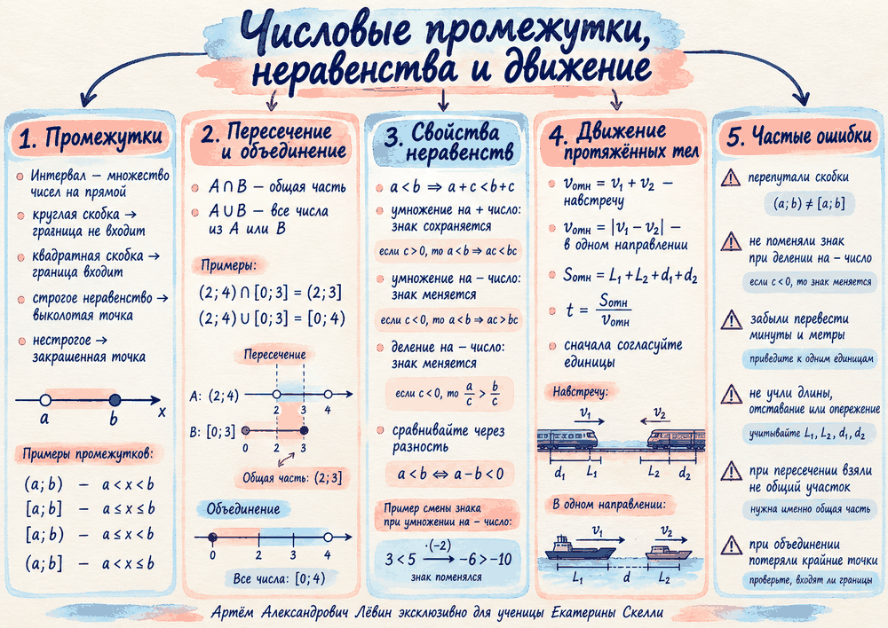

90 км/ч · 1 минута · лесополоса 800 м
1 мин = 1/60 ч, 800 м = 0,8 км. Длина лесополосы входит в относительный путь.
1/60 = (x+0,8)/90 → x=0,7 км = 700 м
Длина поезда: 700 м.
03.10.2026 · алгебра и текстовые задачи
Числовые промежутки, свойства неравенств и движение протяжённых тел. Три линии занятия связаны одной привычкой: точно читать условие, следить за границами и сохранять смысл каждого преобразования.
01 · границы
Промежуток — множество чисел на прямой. Круглая скобка показывает, что граница не входит; квадратная — что входит. На прямой это соответствует выколотой и закрашенной точкам.
a<x<b · обе границы не входят.
a≤x≤b · обе границы входят.
Входит только одна из двух границ.
Фиксированный эксперимент из урока
Переключайте действие. Состояния используют только пример текущего пособия.
Практический пример с температурой: температура не ниже 20 °C на промежутке [9:00;17:20]. Границы входят, потому что в 9:00 и 17:20 температура ровно 20 °C.
Полезное наблюдение: если 0<m<1, то m²<m<m+1.
02 · знак
При прибавлении или вычитании одного и того же числа знак сохраняется. При умножении или делении на положительное число он тоже сохраняется. Отрицательный множитель или делитель разворачивает знак.
Проверьте правило на примере из тренировки
Исходное отношение фиксировано: p<q.
Знак сохраняется: к обеим частям прибавили одно и то же число.
Сравните его с левой частью исходного неравенства.
Отрицательное число требует поменять направление неравенства.
На этом шаге знак не меняется.
Например, из b>3 следует b/(−2)+10<8,5.
Сравнение через разность: если a+1=2b и b>1, то a−b=b−1>0, следовательно a>b.
03 · относительное движение
Для протяжённых тел важны длины объектов и их взаимное движение. Навстречу скорости складываются, в одном направлении берётся модуль разности. Перед вычислениями единицы приводятся к одной системе.
vотн=v₁+v₂
vотн=|v₁−v₂|
Sотн=L₁+L₂+d₁+d₂
1 мин = 1/60 ч, 800 м = 0,8 км. Длина лесополосы входит в относительный путь.
Длина поезда: 700 м.
Скорость относительного движения равна 65−5=60 км/ч.
Если длиной пешехода пренебрегаем, длина поезда равна 500 м.
Первая баржа догоняет, полностью проходит вторую и получает заданное опережение.
Разность скоростей: 2 км/ч.
04 · на одном листе
Плакат собирает обозначение промежутков, пересечение и объединение, смену знака в неравенствах, относительное движение и типичные ошибки.

05 · Путь А
Задания идут от чтения промежутка и свойств неравенств к задачам на движение протяжённых тел.
Запишите промежутком множество решений: −4≤x<2.
A=(−3;5], B=[1;7). Найдите A∩B и A∪B.
Какие числа принадлежат (0,4;0,6): 2/5, 1/2, 3/5, 5/9?
В 8:00 было 15 °C. До 12:00 температура росла на 3 °C/ч, затем снижалась на 2 °C/ч. Когда температура была не ниже 21 °C?
При p<q поставьте знак: p+6 □ q+6; −3p □ −3q; 5−p □ 5−q.
При a>12 оцените −0,5a+4.
a+3=2b, b>3. Сравните a и b.
Поезд 72 км/ч проходит столб за 25 с. Найдите длину поезда.
Поезд 90 км/ч полностью проходит мост 600 м за 48 с. Найдите длину поезда.
Баржи 60 м и 40 м: отставание 200 м, опережение после обгона 300 м, время 18 мин. Найдите разность скоростей.